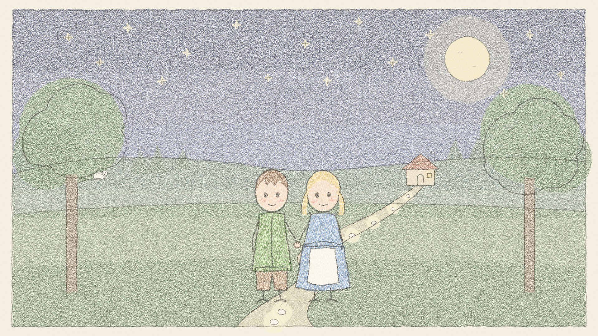

Hansel et Gretel, une histoire du soir
Une version douce de Hansel et Gretel pour le soir, d'après le conte des frères Grimm traduit par D. L. Ashliman. 9 minutes d'écoute. Dans cet épisode : - Des cailloux qui brillent, une maison en pain et en gâteau, et une sœur maligne qui libère son frère. - Un gentil canard blanc les ramène chez leur papa, et l'histoire se termine par une bonne nuit tout en douceur. Sources : Hansel and Gretel Musique : Kevin MacLeod (incompetech.com), CC BY 4.0 De douces histoires pour le soir et l'heure du conte, racontées lentement par une voix chaleureuse. luongnv.com/podcast/stories
Listen on Once Upon a Time Show Download MP3 Transcript
Also in: English, Tiếng Việt
Based on Hansel and Gretel